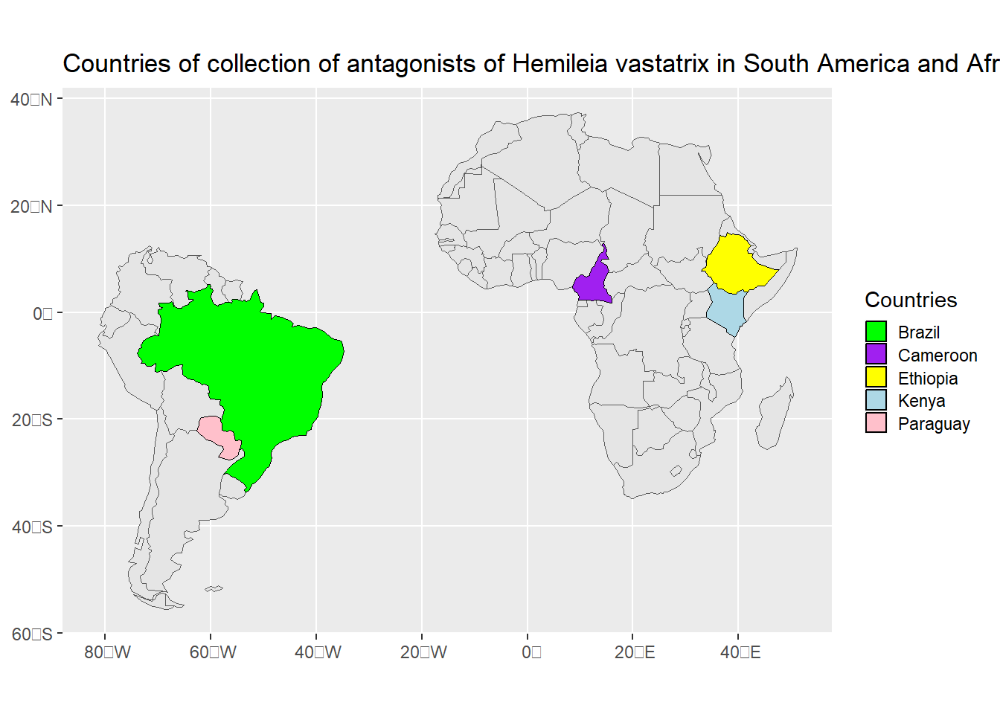
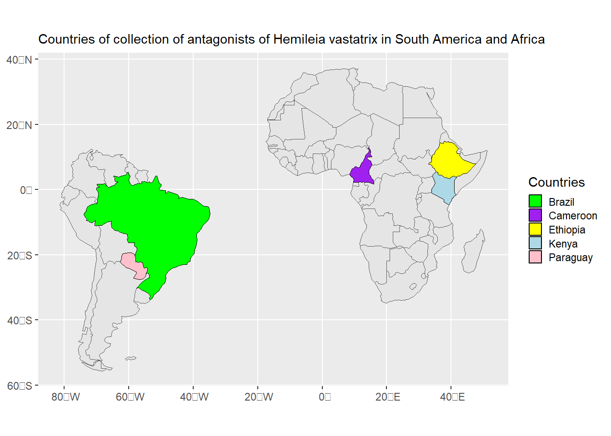

library(tidyverse)
library(rnaturalearth)
library(rnaturalearthhires)
library(ggplot2)
library(geobr)Mapa de coleta
Países de coleta:
Os antagonistas de Hemileia vastatrix foram coletados em 5 países de 2 continentes diferenetes - América do Sul e áfrica. Os países de coleta na América do Sul restrigiram-se ao Brasil e Paraguai, enquanto quer na África as coletas foram realizadas em Camarões, Etiópia e Quênia.
Pacotes necessários:
Plotagem do mapa:
africa <- ne_countries(continent = "Africa", returnclass = "sf")
sa <- ne_countries(continent = "South America", returnclass = "sf")
af <- c("Kenya", "Cameroon", "Ethiopia")
bra <- c("Brazil", "Paraguay")
cores_af <- c("green", "purple", "yellow")
cores_sa <- c("lightblue", "pink")
paises_af <- africa |>
filter(name %in% af)
paises_sa <- sa |>
filter(name %in% bra)
ggplot() +
geom_sf(data = africa) +
geom_sf(data = sa) +
geom_sf(data = paises_af, aes(fill = name), color = "black") +
geom_sf(data = paises_sa, aes(fill = name), color = "black") +
scale_fill_manual(values = c(cores_af, cores_sa), name = "Countries", guide = guide_legend(override.aes = list(shape = ".", size = 3)))+
theme(legend.key.size = unit(0.8, "lines"))+
labs(title = "Countries of collection of antagonists of Hemileia vastatrix in South America and Africa")
Salvando o gráfico:
ggsave("imgs/mapa.png", dpi = 600, height = 4, width = 7)Reduzindo o tamanho da fonte do título:
africa <- ne_countries(continent = "Africa", returnclass = "sf")
sa <- ne_countries(continent = "South America", returnclass = "sf")
af <- c("Kenya", "Cameroon", "Ethiopia")
bra <- c("Brazil", "Paraguay")
cores_af <- c("green", "purple", "yellow")
cores_sa <- c("lightblue", "pink")
paises_af <- africa |>
filter(name %in% af)
paises_sa <- sa |>
filter(name %in% bra)
ggplot() +
geom_sf(data = africa) +
geom_sf(data = sa) +
geom_sf(data = paises_af, aes(fill = name), color = "black") +
geom_sf(data = paises_sa, aes(fill = name), color = "black") +
scale_fill_manual(values = c(cores_af, cores_sa), name = "Countries", guide = guide_legend(override.aes = list(shape = ".", size = 3)))+
theme(legend.key.size = unit(0.8, "lines"),
plot.title = element_text(size = 11))+
labs(title = "Countries of collection of antagonists of Hemileia vastatrix in South America and Africa")
Salvando o gráfico:
ggsave("imgs/mapa2.png", dpi = 600, height = 4, width = 7)